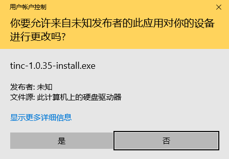
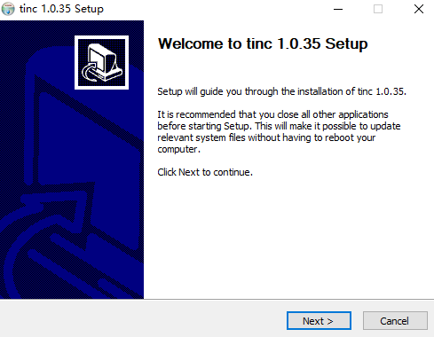
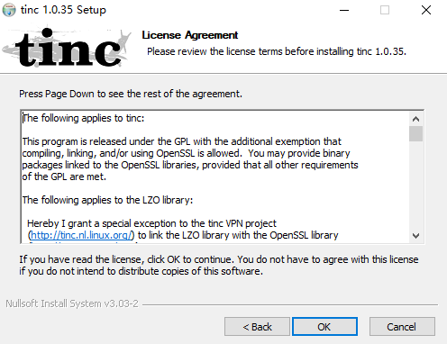
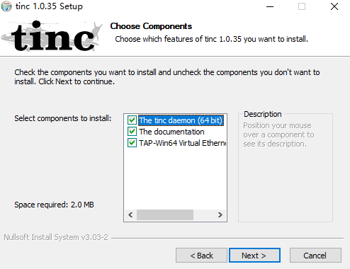
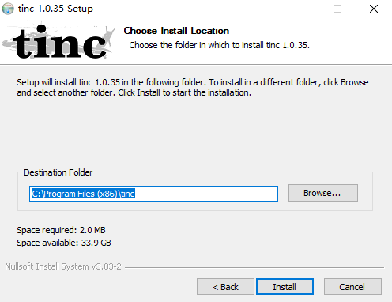
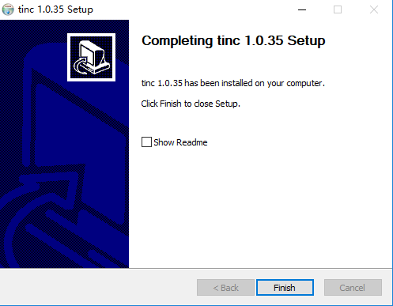
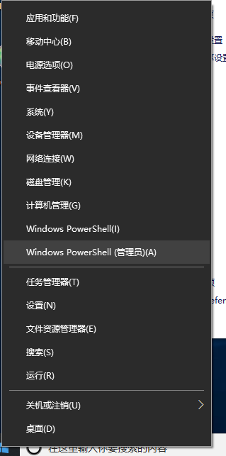
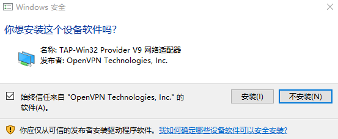
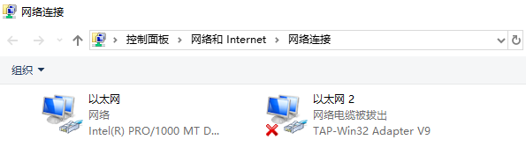

3. 笔记本 / Windows 10
本节将日常使用的笔记本连入 VPN，操作系统为 Windows 10 。虽然以 Win10 为例，但 Windows 系列操作基本一致，需要注意的是权限问题以及默认防火墙策略的设置。
VPN 设置：
| 项目 | 数据 |
|---|---|
| VPN 网络名称 | home_vpn |
| VPN 主机名称 | notebook |
| VPN IP | 10.0.0.101 |
| VPN 子网掩码 | 255.255.255.0 |
| VPN CIDR | 10.0.0.101/24 |
| tinc 端口 | 655(默认) |
安装 tinc
首先到官网下载安装包 https://www.tinc-vpn.org/download/。目前能下载到的最新稳定版是 1.0.35。下载完成后运行安装程序，直接 Next，Next 到 Finish 即可，整个过程非常的简单。      
安装完成后，需要先安装虚拟网卡设备。在任务栏 Win 按钮处，按鼠标右键并选择 Windows PowerShell（管理员）(A)，后面的操作我们都将使用打开的命令行窗口（方便获得管理员权限也方便读者粘帖命令）：

执行下面的命令增加一块虚拟网卡，安装过程中如果出现安全提示，如下图，请选择 安装：
& 'C:\Program Files (x86)\tinc\tap-win64\addtap.bat'

在任务栏 Win 按钮处，按鼠标右键并选择 网络连接，然后右侧选择 网络和共享中心，接着左侧选择 更改适配器设置，这时右侧就列出了当前系统中所有的网卡设备，如下图。可以看到系统新增加了一块网卡 以太网 2，请记住这个名称，后面配置文件中需要用到。目前，该设备的状态是个小红叉，处于“网络电缆被拔出”状态。
备注：由于配置环境的差异，您的可能与我不同（例如 Win7 中为 本地连接 2）。

创建配置文件
下面的命令我们仍然在上述打开的 管理员：Windows PowerShell 窗口中进行。
1.建立网络配置目录（网络名称为 home_vpn）：
mkdir -p 'C:\Program Files (x86)\tinc\home_vpn\hosts'
2.建立配置文件 tinc.conf
notepad 'C:\Program Files (x86)\tinc\home_vpn\tinc.conf'
编辑 tinc.conf 内容如下：
Name = notebook
ConnectTo tinc_ali
Interface = 以太网 2
指明本主机的主机名为 notebook，连接核心主机 tinc_ali。与之前不同的是，增加了一行 Interface。Interface 指定了 tinc 使用的虚拟网卡名称，该上面安装步骤增加的虚拟网卡设备的名称。注意：不建议将虚拟网卡改名，原因看这里。
3.建立启动和关闭批处理文件
Windows 可以通过图形界面来预先设定虚拟网卡的地址，不需要通过批处理来设置，但建议依然使用批处理。
注意，在 Windows 需要增加后缀名 “.bat” 以表明文件类型为 批处理。
创建启动脚本 tinc-up.bat：
echo '' > 'C:\Program Files (x86)\tinc\home_vpn\tinc-up.bat'
notepad 'C:\Program Files (x86)\tinc\home_vpn\tinc-up.bat'
编辑 tinc-up.bat 内容如下：
netsh interface ip set address "以太网 2" static 10.0.0.101 255.255.255.0
创建关闭脚本 tinc-down.bat
echo '' > 'C:\Program Files (x86)\tinc\home_vpn\tinc-down.bat'
notepad 'C:\Program Files (x86)\tinc\home_vpn\tinc-down.bat'
编辑 tinc-down.bat 内容如下：
netsh interface ip set address "以太网 2" source=dhcp
4.创建本主机描述文件（网络名称为 notebook）
echo '' > 'C:\Program Files (x86)\tinc\home_vpn\hosts\notebook'
notepad 'C:\Program Files (x86)\tinc\home_vpn\hosts\notebook'
编辑 notebook 内容如下：
Subnet = 10.0.0.101/32
生成密钥
执行 tincd 生成脚本， -n 指定网络名称，-K 指明生成密钥，可以在 -K 后以数字指定密钥长度，普通用途用默认值（2048）即可。命令执行过程中，需要指定文件名，不用管直接两次回车用默认值即可。
& 'C:\Program Files (x86)\tinc\tincd.exe' -n home_vpn -K
运行完成以后，会生成私钥文件 /etc/tinc/home_vpn/rsa_key.priv，并更新本主机的描述文件 /etc/tinc/home_vpn/hosts/notebook。
交换密钥
将本主机的 C:\Program Files (x86)\tinc\home_vpn\hosts\notebook 复制到核心主机的 /etc/tinc/home_vpn/hosts/notebook。
复制核心主机的 /etc/tinc/home_vpn/hosts/tinc_ali 到本主机的 C:\Program Files (x86)\tinc\home_vpn\hosts\tinc_ali。
设为自启
执行下列命令，手工启动服务，程序将自动注册为系统服务，并出于自动状态，即开机启动，无需登录：
& 'C:\Program Files (x86)\tinc\tincd.exe' -n home_vpn
系统提示：
tinc.home_vpn service installed
tinc.home_vpn service started
可以打开系统的服务面板，来查看详细的信息或进行更进一步的设置。普通用户不用管，默认就可以了。
测试
重启完成后，通过 ping 来验证网络是否互通。
在 notebook 上：
ping 10.0.0.254
在 tinc_ali 上：
ping -c 10.0.0.101
如果您是严格按照教程做，无意外的话已经能相互 ping 通了。注意，Windows 系统默认的防火墙设置关闭了 PING，如果ping不通，请检查双方，尤其是 Windows 的防火墙设置是否正确。参见这里。
完成
tinc VPN 增加主机非常的方便，现在已经有3台机器了。下一节，将继续接入我的开发机，该机器为一台 Mac Mini，运行的操作系统为 MacOS mojave。